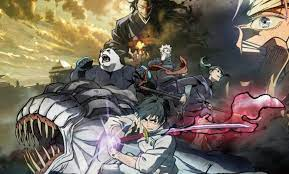

Hace mucho tiempo en Japón se creía que existía una raza diferente a los humanos, los vampiros. Eran seres sin temor a nada, cuando sus sentidos se alteraban al sentir el olor de la sangre, sus ojos se ponían de un color rojo brillante y su actitud se tornaba algo violenta. Al pasar del tiempo se creyó que esta raza se había extinguido de allí, pero la verdad es que ellos tuvieron que adaptarse a vivir una vida como la de un humano para que no sufrieran de nuevo el dolor que les causaba cuando algún cazador mataba a alguno de ellos, cabe mencionar que los vampiros tenían terminantemente prohibido relacionarse con humanos, sí, podían hablar con ellos, pero no más, si alguien rompía esta regla tanto el vampiro como el humano sufrirían terribles consecuencias.
 Formulario Categorias